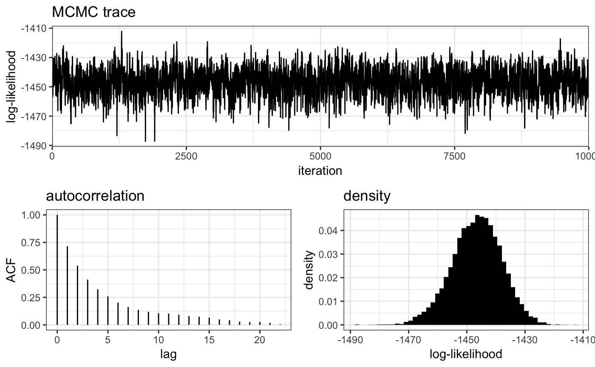
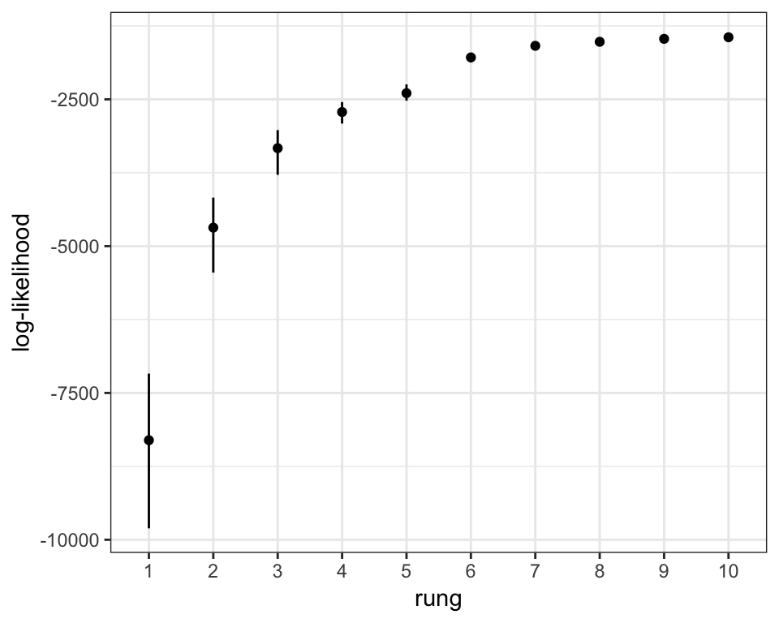
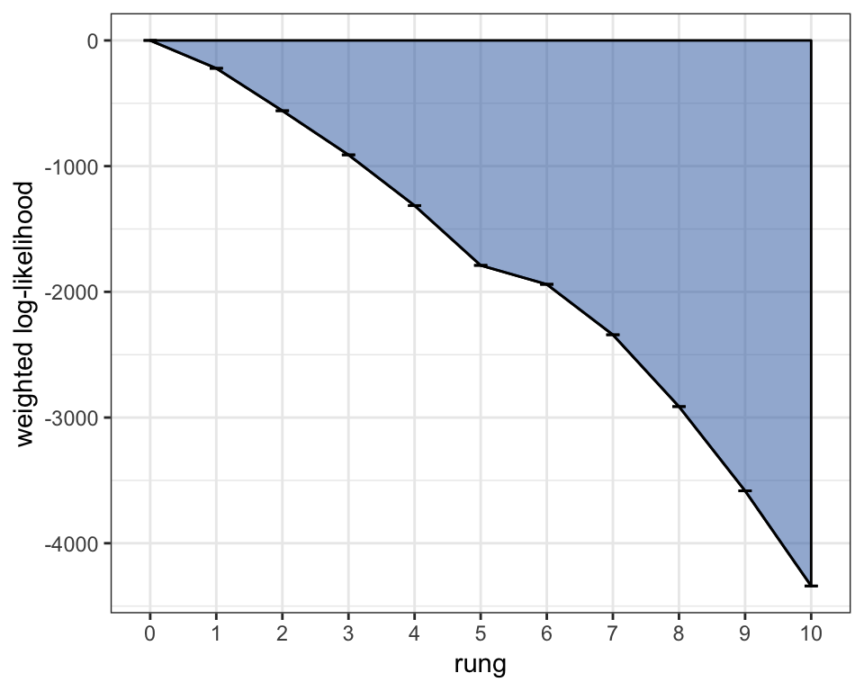

Tutorial 4: Comparing models (estimating K)
Bob Verity
2018-09-26
comparing-models.RmdThis vignette demonstrates model comparison in MALECOT. It covers:
- Running thermodynamic MCMC
- Checking convergence of thermodynamic MCMC
- Estimating K via generalized thermodynamic integration (GTI)
- Comparing parameter sets through the model evidence
This tutorial assumes some prior knowledge about MALECOT, so if you are completely new to the program we recommend working through the simpler bi-allelic tutorial first.
Background on Bayesian model comparison
When carrying out Bayesian analysis it is useful to make a distinction between two types of analysis:
- parameter estimation within a model
- comparison between models
As an example, we might create a model \(\mathcal{M}\) in which we write down the probability of the observed data \(x\) as a function of the unknown allele frequencies \(p\). In other words, we write down the likelihood \(\mbox{Pr}(x \: | \: p, \mathcal{M})\).
In Bayesian parameter estimation we are trying to get at the posterior probability \(\mbox{Pr}(p \: | \: x, \mathcal{M})\). We typically do this using MCMC, which produces a series of draws from the posterior distribution.
But what if we want to know the posterior probability of the model, rather than the parameters of the model? In other words, we want to know \(\mbox{Pr}(\mathcal{M} \: | \: x)\). Calculating this quantity requires that we integrate over all unknown parameters:
\[\mbox{Pr}(\mathcal{M} \: | \: x) = \int \mbox{Pr}(\mathcal{M}, p \: | \: x) dp\]
This is often an extremely high-dimensional integral - for example in MALECOT there could easily be hundreds of unknown parameters - making it computationally infeasible by most methods. Regular MCMC cannot help us here because it only produces draws from the posterior distribution rather than normalised values.
One way around this is to use an advanced MCMC technique known as thermodynamic integration (TI). In TI we run multiple MCMC chains, each at a different “rung” on a temperature ladder. The hotter the chain, the flatter the target distribution. The log-likelihoods over all chains are then combined in a single calculation that - by what can only be described as mathematical magic! - is asymptotically equal to \(\log[\mbox{Pr}(x \: | \: \mathcal{M})]\). We can then apply a prior over models, for example giving each model equal weight, to arrive at the desired posterior value \(\mbox{Pr}(\mathcal{M} \: | \: x)\). Generalised thermodynamic integration (GTI) differs from regular TI in that it uses a slightly different calculation when combining information across rungs that leads to lower bias and higher precision.
Hopefully this is enough background to run thermodynamic MCMC in MALECOT, and to understand the results. For those eager to understand all the mathematical details, see this vignette.
Running a thermodynamic MCMC
For the sake of this tutorial we will use simulated bi-allelic data drawn from \(K = 3\) subpopulations. We create a new project and bind this data:
# simulate data
mysim <- sim_data(data_format = "biallelic", n = 100, L = 24, K = 3)# create project and bind data
myproj <- malecot_project()
myproj <- bind_data_biallelic(myproj, df = mysim$data, ID_col = 1, pop_col = 2)For our first parameter set we will assume a very basic model with default parameters; which means a Poisson prior on COI, a flat prior on allele frequencies and no error estimation:
# create parameter set
myproj <- new_set(myproj, name = "simple model")We will then run the MCMC for values of \(K\) from 1 to 5. What makes this thermodynamic MCMC rather than regular MCMC is the rungs argument, which dictates the number of rungs on the temperature ladder. We will opt for 10 rungs for now. Be warned - this MCMC will take considerably longer to run than regular MCMC, so be prepared to go make yourself a cup of tea!
# run thermodynamic MCMC
myproj <- run_mcmc(myproj, K = 1:5, burnin = reps, converge_test = 1e2,
samples = reps, rungs = 10, pb_markdown = TRUE)## Running MCMC for K = 1
## Burn-in phase
##
|
|=================================================================| 100%
## Warning: convergence still not reached within 100 iterations
## 2.36571 2.90913 2.44232 1.92111 3.64372 3.02044 4.31065 3.35806 3.13191 2.60477 3.35008 2.84336 4.55211 3.77551 3.02663 3.33374 3.44241 1.92222 2.72041 3.24112 3.02925 2.38237 2.78164 2.57415 2.59625 3.67413 1.72574 2.30125 2.05628 2.61264 3.25549 2.93131 3.02282 2.28852 3.26615 3.17855 2.63213 2.62692 3.49405 3.3894 2.98467 4.17414 3.31608 3.69049 3.64791 4.14358 3.45999 1.91996 3.22799 3.29458 2.74087 3.78224 2.99189 3.40772 2.79101 2.79391 4.26638 3.57906 3.09759 2.80823 3.49786 3.0533 4.2794 3.67005 3.42037 3.88865 3.51549 3.20152 2.27895 2.64539 4.1819 3.60357 3.06678 3.2212 2.66436 3.5623 1.55983 2.96128 2.73611 3.78209 2.55097 2.15065 2.78699 3.52943 2.90745 3.60523 2.62771 2.20475 3.43878 1.98858 3.53791 3.35654 3.0172 3.9261 3.19757 3.25294 3.35082 1.76564 3.22049 3.68694
## Sampling phase
##
|
|=================================================================| 100%
## completed in 0.235656 seconds
##
## Running MCMC for K = 2
## Burn-in phase
##
|
|=================================================================| 100%
## Warning: convergence still not reached within 100 iterations
## 2.23845 3.20835 2.87408 2.78689 3.67332 2.48276 3.45451 3.93545 2.62527 1.85617 2.58993 2.90434 3.7289 3.80672 4.77858 2.88468 2.07626 3.80109 2.49372 2.13281 3.0136 3.12704 3.16362 3.69091 2.88907 2.88003 3.89093 2.08857 2.90396 2.96486 3.50159 2.71761 2.20823 3.85453 3.15611 3.49063 2.74512 3.69842 4.01045 4.37698 2.97214 3.59288 4.37323 3.88332 3.56543 4.20597 4.54222 2.45084 4.79167 4.03945 2.83153 4.19769 2.72112 3.65539 3.21875 3.71891 5.132 4.58925 2.58613 3.07316 3.08866 2.30311 2.89569 2.97248 3.30391 4.1897 2.88934 4.18404 3.9785 3.90269 4.1618 5.75815 4.62998 3.43632 3.59367 5.00199 3.27304 4.61566 2.28014 4.04785 3.04732 3.67663 2.7983 4.43687 4.13371 4.47653 2.65024 2.06539 3.55844 2.97239 3.86508 3.1064 4.51447 2.13627 2.90866 3.19239 3.77156 2.6187 2.2343 5.1356
## Sampling phase
##
|
|=================================================================| 100%
## completed in 0.389286 seconds
##
## Running MCMC for K = 3
## Burn-in phase
##
|
|=================================================================| 100%
## Warning: convergence still not reached within 100 iterations
## 3.21861 2.51442 3.32195 1.85602 3.32861 2.722 3.96274 4.03423 3.76228 2.82281 4.09987 2.88595 2.97256 4.8322 3.16511 3.42526 3.39074 4.27996 3.10247 2.45101 3.31327 2.85639 4.51305 4.57626 3.05281 2.9452 2.95452 2.87404 3.97364 3.50705 4.34246 2.46959 3.07819 5.69472 3.13077 4.96221 2.21153 3.50573 4.52173 4.84821 3.85835 6.05617 4.43167 4.03151 3.84686 4.45435 5.22928 3.90491 5.52342 4.2802 3.86898 2.88302 1.45183 4.07946 2.1285 3.80719 4.68484 6.84785 4.64432 3.24325 3.08513 2.6913 5.64828 5.20054 4.29676 4.92852 4.22832 3.83243 3.61355 5.9952 2.59417 5.64848 3.33428 3.85225 1.86558 5.48679 3.4283 3.42126 2.91117 4.44473 2.82587 4.11091 4.1258 4.72928 4.37756 3.96801 2.60755 2.62939 3.26241 3.65682 4.24696 2.23494 3.96736 2.1518 3.23422 3.77116 3.58748 2.6224 2.81036 4.59339
## Sampling phase
##
|
|=================================================================| 100%
## completed in 0.468157 seconds
##
## Running MCMC for K = 4
## Burn-in phase
##
|
|=================================================================| 100%
## Warning: convergence still not reached within 100 iterations
## 2.04222 2.26324 4.12988 2.52375 4.75767 2.00139 2.96377 3.19208 4.19398 1.92839 4.90397 2.09801 4.44772 5.31494 3.91908 3.23527 3.20347 4.78278 2.28085 2.75425 4.0179 3.01621 4.69364 3.85142 4.19855 2.26987 3.69339 1.77938 2.80043 2.82225 4.2347 2.44541 3.55108 5.92301 2.30469 5.93132 2.88995 3.98963 4.32296 4.70033 4.29114 4.37523 4.58471 3.53694 4.14206 4.56772 3.61141 3.4134 6.84869 4.903 2.53045 4.81209 2.09653 4.7677 2.74293 4.30372 6.61129 5.26876 4.01514 3.32305 2.99166 2.14851 3.86084 4.22997 3.69439 4.01432 6.01739 3.99392 4.8055 4.90846 4.75797 6.41773 3.62478 3.75665 1.60507 4.55399 4.6689 3.94094 3.01629 4.00561 3.35218 3.61825 3.56499 6.60649 4.03176 4.4682 2.76625 2.96044 3.42929 3.60645 3.57443 3.41046 3.75675 2.55256 4.23781 4.21534 3.47044 3.27147 2.90186 4.46455
## Sampling phase
##
|
|=================================================================| 100%
## completed in 0.548814 seconds
##
## Running MCMC for K = 5
## Burn-in phase
##
|
|=================================================================| 100%
## Warning: convergence still not reached within 100 iterations
## 1.87791 2.12259 4.23513 2.60719 5.26352 2.28171 2.89506 2.95608 3.35481 2.08442 4.82081 3.88203 3.60844 5.77999 4.45093 3.1076 4.50846 5.70214 2.22293 2.49963 4.6337 2.29535 4.57317 3.71715 3.33705 2.07021 3.5291 3.20098 4.57127 1.98804 4.10498 2.98498 2.68148 6.16662 2.98262 4.56402 1.89154 4.72085 5.394 6.49914 4.08417 5.02211 5.10504 5.3314 5.07607 4.3601 4.12298 3.42959 6.00835 3.42905 3.45528 3.39698 3.3704 4.27815 2.78624 4.57132 6.78682 5.97306 5.38512 3.35865 3.08545 2.61548 5.82136 4.621 4.67556 5.40514 4.62389 4.65098 5.13005 3.82364 3.91585 6.35386 4.45166 5.03557 2.26733 5.37815 3.54452 4.36295 4.0334 4.31307 3.8544 4.36796 2.94029 5.40303 3.56097 4.07894 2.848 3.25661 5.01566 4.34184 4.28278 3.34798 4.56176 2.3363 4.30154 2.95914 3.36934 2.84792 2.9572 5.80163
## Sampling phase
##
|
|=================================================================| 100%
## completed in 0.639926 seconds
##
## Processing results## Total run-time: 3.78 seconds##
## **WARNING** at least one MCMC run did not convergeNotice that convergence times are much longer than under regular MCMC. This is because the MCMC is only deemed to have converged when every chain has converged, meaning we are only as strong as the weakest link. When running thermodynamic MCMC it is therefore important to keep an eye on convergence, and to increase the number of burn-in iterations if needed.
Checking thermodynamic MCMC behaviour
There are more moving parts in thermodynamic MCMC, meaning we have more things to check. First, we should perform the same diagnostic checks as for regular MCMC:
plot_loglike_dignostic(myproj, K = 3)
The plot_loglike_diagnostic() function uses the cold rung by default (in this case the 10th rung), or we can use the rung argument to produce plots for any given rung, for example:
plot_loglike_dignostic(myproj, K = 3, rung = 1)
Running get_ESS() now prints out the effective sample size of every rung:
get_ESS(myproj, K = 3)## rung1 rung2 rung3 rung4 rung5 rung6 rung7 rung8
## 45.70899 31.67886 18.16358 21.66121 21.37925 18.75050 17.77945 19.34429
## rung9 rung10
## 13.51520 12.07435We interpret ESS for hot chains the same way as for the cold chain - as the number of independent samples that we have obtained from the target distribution once autocorrelation has been accounted for. If we see small values of the ESS (less than one thousand as a rule of thumb) then we should be concerned that that particular rung has has not explored the space well, and we should repeat the analysis with a larger number of samples.
A useful plotting function when working with multiple rungs is the plot_loglike() function, which plots the 95% quantiles of the log-likelihood over every rung:
plot_loglike(myproj, K = 3)
This plot should be always-increasing from left to right, aside from small variations due to the random nature of MCMC. If any rungs stand out from the overall pattern then it is worth running plot_loglike_diagnostic() on these particular rungs, as they may have mixed badly. As with all other checks, this should be performed on every explored value of \(K\).
The GTI method takes the log-likelihood values above and multiplies them by weights, leading to a GTI “path”. The area between this path and the zero line is our estimate of the log-evidence. We can visualise this path using the plot_GTI_path() function:
plot_GTI_path(myproj, K = 3)
As our evidence estimate is derived from the area between the line and zero, it is important that this path is not too jagged. We are essentially approximating a smooth curve with a series of straight line segments, so if the straight lines cut the corners off the smooth curve then the area will be too large or too small, leading to a biased estimate. There are two ways that we can mitigate this:
- Increase the number of rungs
- Change the
GTI_powargument
Increasing the number of rungs will obviously lead to a smoother path, and it will also help with MCMC mixing, but it comes at the cost of slowing down the MCMC. The GTI_pow argument changes the curvature of the path by modifying the log-likelihood weights, with large values leading to a more concave path. Ideally we want to choose GTI_pow such that the path is as straight as possible, as this will lead to smallest difference between the true curve and the discrete approximation. The plot above is slightly concave using the default value GTI_pow = 3, but it is not pathalogically concave. If we were producing results for publication and had a computer sitting idle overnight then we could consider re-running the MCMC with more rungs and a lower GTI_pow, but otherwise these results are fine.
Plotting results
Once we are happy with our log-likelihood estimates and our GTI path, we can use our log-evidence estimates to compare values of \(K\). The raw estimates can be plotted using the plot_logevidence_K() function, which plots 95% credible intervals of the log-evidence for each value of \(K\):
plot_logevidence_K(myproj)We can see immediately that the model favors \(K = 3\) in this case, which agrees with our simulation parameters. If we had seen large credible intervals at this stage then we could re-run the model with a larger number of samples, but in this example the intervals are non-overlapping and the signal is clear so there is no need.
We can also use the plot_posterior_K() function to plot the posterior probability of each value of \(K\), which is obtained by taking these raw estimates out of log space and applying an equal prior over \(K\):
plot_posterior_K(myproj)
This second plot is often easier to interpret than the first as it is in units of ordinary probability. In this case we can see that there is a >99% posterior probability that the data were drawn from \(K = 3\) subpopulations (which we know to be true). Again, if we saw large credible intervals at this stage then it would be worth re-running the MCMC with a larger number of samples, but here there is no need.
Comparing different parameter sets
One of the major advantages of the model evidence is that we can use it to compare wider evolutionary models, i.e. different parameter sets. Mathematically this is a simple as summing the evidence for each value of \(K\), weighted by the prior.
We can test this by creating a second parameter set that differs from the first in that in that we now estimate the error terms:
# create new parameter set
myproj <- new_set(myproj, name = "error model", estimate_error = TRUE)
myproj## DATA:
## data format = biallelic
## samples = 100
## loci = 24
## pops = 3
## missing data = 0 of 2400 gene copies (0%)
##
## PARAMETER SETS:
## SET1: simple model
## * SET2: error model
##
## ACTIVE SET: SET2
## lambda = 1
## COI model = poisson
## COI max = 20
## estimate COI mean = TRUE
## estimate error = TRUE
## e1_max = 0.2
## e2_max = 0.2We will run thermodynamic MCMC for this parameter set over the same range of \(K\) values:
# run MCMC
myproj <- run_mcmc(myproj, K = 1:5, burnin = reps, converge_test = 1e2,
samples = reps, rungs = 10, pb_markdown = TRUE)## Running MCMC for K = 1
## Burn-in phase
##
|
|=================================================================| 100%
## Warning: convergence still not reached within 100 iterations
## 3.04001 5.41221 5.72053 3.49245 5.0362 3.58405 4.8846 5.61344 4.09717 4.91134 5.62199 4.64143 5.63467 6.40117 5.08133 4.18682 5.96081 7.0658 4.20489 2.86522 5.83226 3.13481 6.21909 6.38359 4.03524 3.61564 4.06182 5.14161 5.46704 4.54514 6.29991 2.25406 1.93134 4.77364 3.36988 5.75537 5.20079 4.283 5.12991 5.90722 5.1234 5.44145 5.01453 5.42774 6.27145 6.29516 6.24622 3.25408 6.85633 6.26193 4.36148 5.27442 5.46126 5.43521 5.71404 6.2562 6.73511 5.15718 6.31432 5.67386 5.25588 2.93072 4.63677 4.07484 4.51507 5.39233 3.87774 4.76425 4.96955 6.66961 6.34874 5.93023 6.65906 6.78031 2.72165 6.52602 4.63616 5.57398 5.91764 7.03431 4.3387 5.24483 5.66604 4.95221 6.97741 6.60497 3.24067 4.51776 6.91389 5.83172 5.32382 4.9894 4.32121 3.9041 5.7963 5.40579 3.73004 5.8572 4.71151 5.94545
## Sampling phase
##
|
|=================================================================| 100%
## completed in 0.403488 seconds
##
## Running MCMC for K = 2
## Burn-in phase
##
|
|=================================================================| 100%
## Warning: convergence still not reached within 100 iterations
## 3.87524 4.40997 5.52731 3.9398 5.1708 3.16316 5.5751 4.81702 4.26783 4.59 6.04703 5.15618 6.05796 5.44725 5.20248 4.23004 6.05927 6.83818 3.39198 3.64338 6.09339 4.39851 6.37977 6.50285 5.26569 2.72534 5.48088 3.95554 4.97711 3.53219 5.48713 3.55019 2.48673 5.20782 3.00234 4.90881 4.46758 4.0293 7.0372 5.57135 6.42308 6.1945 5.75899 4.42598 6.25414 5.73736 5.99028 3.15857 5.88328 5.33825 5.49014 5.54684 4.54647 5.69156 6.02551 5.88989 5.64125 6.8753 5.35152 4.50411 6.21854 6.85814 5.53852 4.27175 6.04821 5.11855 5.59485 4.72001 4.48864 4.97955 5.57248 7.19052 6.85352 5.56554 3.04714 5.51379 4.47632 5.05067 4.55331 5.92304 4.211 5.43209 3.75252 5.77252 5.0078 4.83133 3.63003 2.72221 4.7921 4.92826 5.71943 4.06895 5.77847 3.84977 4.62502 4.54139 5.69501 4.1099 2.52733 6.32003
## Sampling phase
##
|
|=================================================================| 100%
## completed in 0.615291 seconds
##
## Running MCMC for K = 3
## Burn-in phase
##
|
|=================================================================| 100%
## Warning: convergence still not reached within 100 iterations
## 3.33767 4.58033 4.65683 4.18907 4.65911 2.783 6.23536 7.06234 4.70394 5.05577 5.26162 2.7955 4.82548 4.14456 4.54124 4.19317 6.06569 6.11871 5.0559 3.29893 6.25963 5.01899 6.07567 5.53988 6.45303 4.70868 4.49978 5.07703 4.26131 4.4775 5.4672 3.3363 3.81218 3.86882 2.63703 5.63016 4.38564 5.49389 4.60019 6.21346 5.48484 5.59986 6.34651 6.30597 7.24491 5.79543 5.88631 5.13956 7.15961 5.98438 5.24079 6.71201 4.34176 4.92746 4.69888 6.22453 5.52876 6.45265 5.23436 6.17694 4.7622 3.52858 4.44789 4.26688 5.19073 5.73475 4.71785 5.80937 4.43178 4.72325 5.77895 5.36049 5.72431 5.86299 2.72455 5.38054 3.79615 4.58602 6.37112 4.61559 3.9065 4.16494 4.57755 5.69799 5.05631 5.10125 3.02195 3.06519 6.42116 4.61335 5.80323 3.68938 5.03287 4.21767 5.62319 5.43722 4.42412 5.37467 2.89596 5.48831
## Sampling phase
##
|
|=================================================================| 100%
## completed in 0.840867 seconds
##
## Running MCMC for K = 4
## Burn-in phase
##
|
|=================================================================| 100%
## Warning: convergence still not reached within 100 iterations
## 2.90542 3.19675 4.10326 2.20424 5.81577 3.52397 4.88829 5.26071 4.79667 4.3269 5.83161 4.54536 5.20406 5.85105 4.26395 2.63033 4.35542 5.20693 4.03982 2.57788 5.77767 5.32448 4.59344 4.88424 4.19279 3.79685 5.94537 5.39512 6.56477 5.00447 4.15513 4.10611 2.72011 4.48697 2.86181 4.92237 4.45986 4.78036 6.67235 6.6063 6.80627 6.86154 6.62499 7.24335 6.23294 6.95248 6.1663 7.06569 5.96226 7.97507 6.57556 5.75958 4.08603 5.84997 6.05439 6.8494 7.13677 6.48104 6.27409 5.86521 6.19358 6.26515 6.37189 5.58528 6.61815 6.47573 6.96229 6.84484 5.76592 6.591 4.92093 7.49949 6.36747 5.85495 2.59722 6.76399 6.47359 5.3419 6.65494 5.91843 5.60754 6.43254 4.51134 7.27077 4.01589 5.87007 3.20891 3.85828 6.68202 5.8608 4.77788 2.71662 5.21877 3.13108 5.37586 6.06519 4.73042 6.29602 2.6769 6.16132
## Sampling phase
##
|
|=================================================================| 100%
## completed in 0.93658 seconds
##
## Running MCMC for K = 5
## Burn-in phase
##
|
|=================================================================| 100%
## Warning: convergence still not reached within 100 iterations
## 3.68618 3.52108 5.17434 4.16997 7.0704 2.51525 5.90352 5.80099 5.51643 4.5768 5.23403 4.4712 3.61536 6.75905 5.73898 3.44796 5.51176 7.92962 3.52008 2.70702 5.97573 3.69695 6.79282 5.31514 4.30641 3.21849 6.35874 3.8705 4.20274 4.63896 5.68488 3.22889 3.43738 5.86484 3.39563 6.59925 3.46316 7.55296 5.91427 4.98804 5.27758 6.6279 5.60319 5.04554 6.05533 7.63503 5.12455 5.44931 6.58649 7.27503 5.24689 5.53228 3.80147 5.64032 7.34951 6.67146 5.92374 4.94265 7.13839 5.94533 6.49779 4.6844 6.59683 5.5508 5.87008 5.98869 4.26671 6.43069 6.89443 5.06481 5.86991 4.44111 5.63845 5.39981 3.78227 5.53525 4.20816 5.76399 5.60281 4.25068 4.50255 4.6371 3.81277 5.53526 5.75538 5.85666 3.44888 1.71517 5.33389 4.90982 6.65672 2.74841 5.12521 3.41254 5.39038 5.03687 5.31465 5.52363 2.69066 5.56382
## Sampling phase
##
|
|=================================================================| 100%
## completed in 1.05478 seconds
##
## Processing results## Total run-time: 5.32 seconds##
## **WARNING** at least one MCMC run did not converge# plot diagnostics
plot_loglike_dignostic(myproj, K = 3)
# report ESS
get_ESS(myproj, K = 3)## rung1 rung2 rung3 rung4 rung5 rung6 rung7 rung8
## 50.11033 69.90919 19.01520 9.21560 42.55340 10.72829 47.48879 18.77706
## rung9 rung10
## 20.90218 13.34424Assuming we are happy with the MCMC behaviour we can go ahead and plot the posterior error estimates:
plot_e(myproj, K = 3)
We know from the simulation parameters that there are no errors in the data, meaning this extra flexibility of estimating the error is actually taking the model further away from the truth. Looking at the posterior credible intervals we can see that the model has struggled to arrive at precise estimates of the error rates, instead exploring the prior range \([0,0.2]\) quite evenly.
We continue with the same analyses as in the previous section:
# use gridExtra package to arrange plots
library(gridExtra)
# produce plots and arrange in grid
plot1 <- plot_loglike(myproj, K = 3)
plot2 <- plot_GTI_path(myproj, K = 3)
plot3 <- plot_logevidence_K(myproj)
plot4 <- plot_posterior_K(myproj)
grid.arrange(plot1, plot2, plot3, plot4)The GTI path looks more concave this time, and so we might consider re-running the MCMC with a smaller value of GTI_pow. We can also see wide credible intervals around the posterior distribution of \(K\) due to the evidence estimates being similar for \(K = 3\) and \(K = 4\), and so we should re-run the MCMC with a larger number of samples.
Finally, we come to the issue of comparing parameter sets. Just as with the evidence estimates over \(K\), we can plot the log-evidence of a parameter set using the plot_logevidence_model() function, or the posterior distribution over models assuming an equal prior using the plot_posterior_model() function:
# produce evidence plots
plot1 <- plot_logevidence_model(myproj)
plot2 <- plot_posterior_model(myproj)
grid.arrange(plot1, plot2, nrow = 1)
Here we can see that the former, simpler model has a higher evidence than the more complex error estimation model. To understand this, we can imagine the MCMC exploring the parameter space under each model. In the simple model the error is fixed at the correct value of zero, while in the more complex model the MCMC has a finite chance of exploring different error values, all of which are sub-optimal in terms of the likelihood. So the likelihood will, on average, be higher under the simple model. In other words, in the complex model we have introduced additional flexibility that has not been compensated for by a commensurate increase in the likelihood, and so the model evidence naturally punishes the model for being over-fitted.
In this example we would conclude that a zero-error model is a better fit to the data, and so we would most likely only report detailed results from this model.